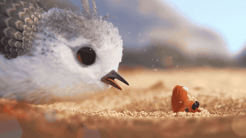
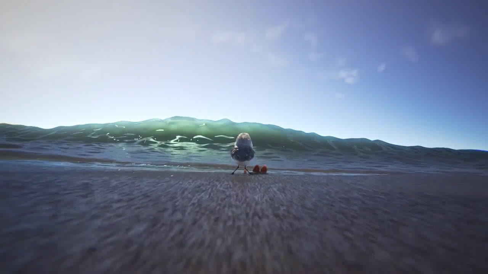
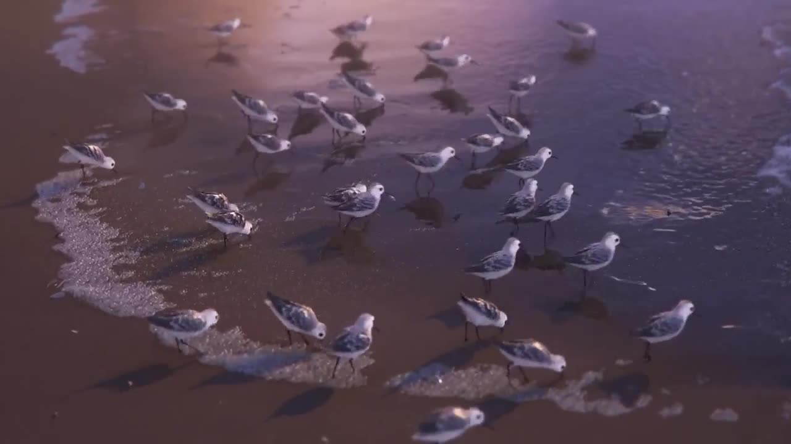
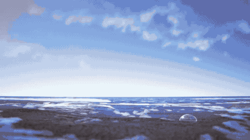

PIPER
Маленький птенец песочника очень хочет есть. Но вся еда спрятана в песке у воды, а там… огромные страшные волны.


Проведи по картинке — оставишь следыШкала прилива
Двигай воду вверх и вниз или нажимай на кружки. Каждый уровень — новая глава мультика.

Как появился «Пайпер»
Нажимай на ракушки — внутри спрятаны жемчужины-факты.
Путь мультика
- ИдеяРежиссёр Алан Барильяро бегал по пляжу в Северной Калифорнии и смотрел на песочников, которые носятся туда-сюда от волн.
- Три года работыКоманда ездила на пляжи изучать птиц. Песочники в мультике двигаются как настоящие, а не как люди в перьях.
- 17 июня 2016Премьера в кино: «Пайпер» показывали перед мультфильмом «В поисках Дори».
- 4 февраля 2017Премия «Энни» за лучший короткий мультфильм.
- 26 февраля 2017«Оскар». Это первый «Оскар» Pixar за короткий метр после мультика «Птички» (2000). На сцене режиссёр поблагодарил своих детей — «трёх маленьких птичек».
Кто его сделал
- Режиссёр и сценарист
- Алан Барильяро
- Продюсер
- Марк Сондхаймер
- Музыка
- Эдриан Белью
- Монтаж
- Сара К. Реймерс
- Студия
- Pixar Animation Studios
До «Пайпер» Барильяро был аниматором на «ВАЛЛ-И», «Храброй сердцем» и «Университете монстров». Это его первый фильм как режиссёра.
Кто живёт на этом берегу
У каждого героя есть переключатель: каким он показан в мультике и какой он в жизни.
Что говорят о мультике
Волны принесли на берег бутылки с записками. Нажми на бутылку, чтобы прочитать.
Шесть минут чистой радости
«Пайпер» — очень милый и красивый мультик. В нём нет ни одного слова, но всё понятно без них.
Птенец впервые идёт к морю за едой, и его с головой накрывает волна. После этого Пайпер боится воды и прячется в гнезде. Мне это очень понятно: если что-то один раз напугало, второй раз ещё страшнее.
Самое классное — как Пайпер побеждает страх. Ей помогает не мама, а крошечный рак-отшельник. Он показывает, как зарыться в песок. И под водой вдруг оказывается целый красивый мир. Этот момент — мой любимый.
Картинка такая живая, будто это снято на камеру: мокрый песок, пена, каждое пёрышко. Трудно поверить, что всё нарисовано на компьютере.
Конец очень тёплый. Пайпер больше не боится и даже находит еду для всей стаи. Мультик учит простой вещи: страх проходит, если посмотреть на него с открытыми глазами.
Это один из лучших коротких мультиков Pixar. Советую всем.
из 10 — моя оценка
